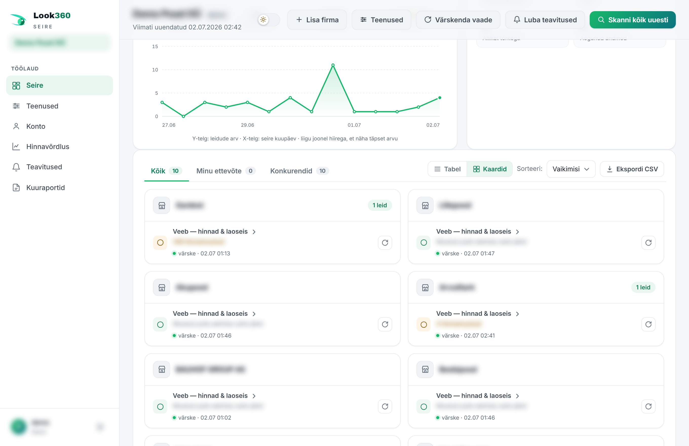
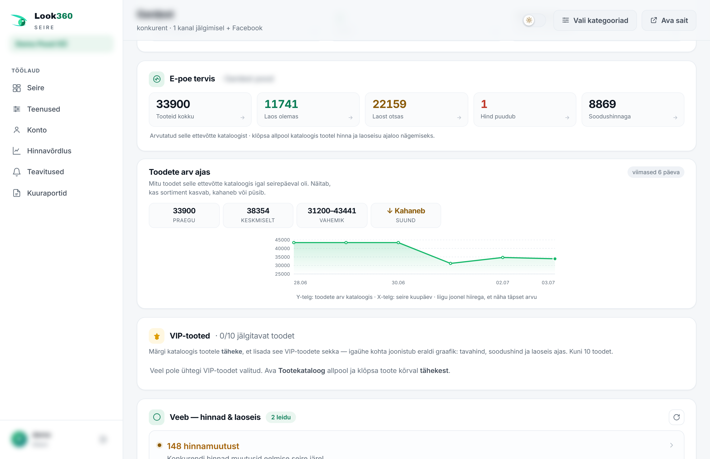
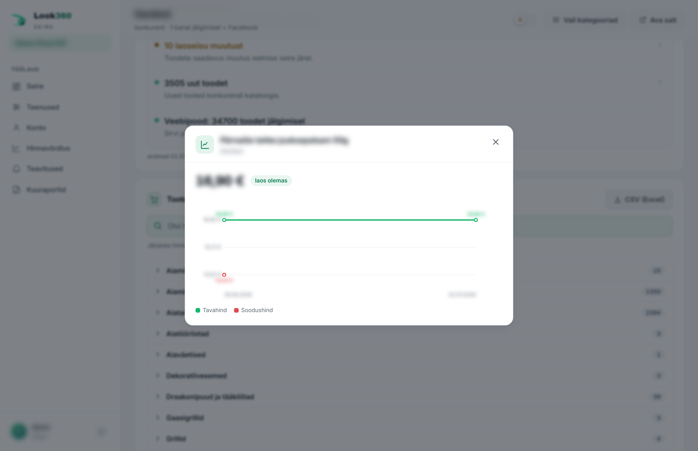
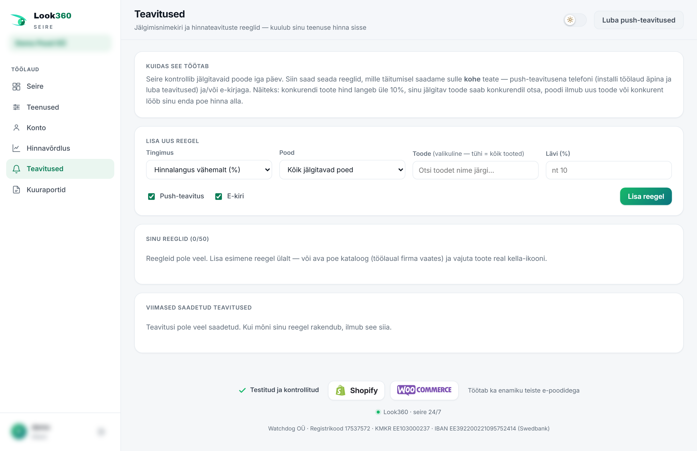
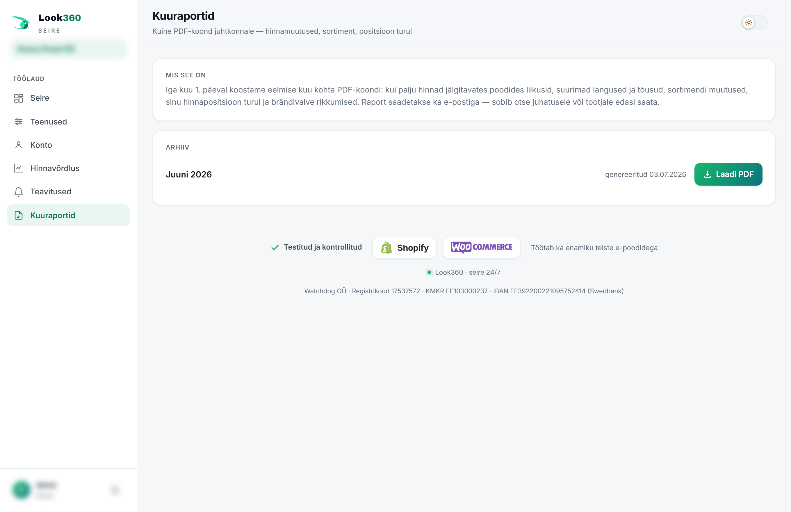
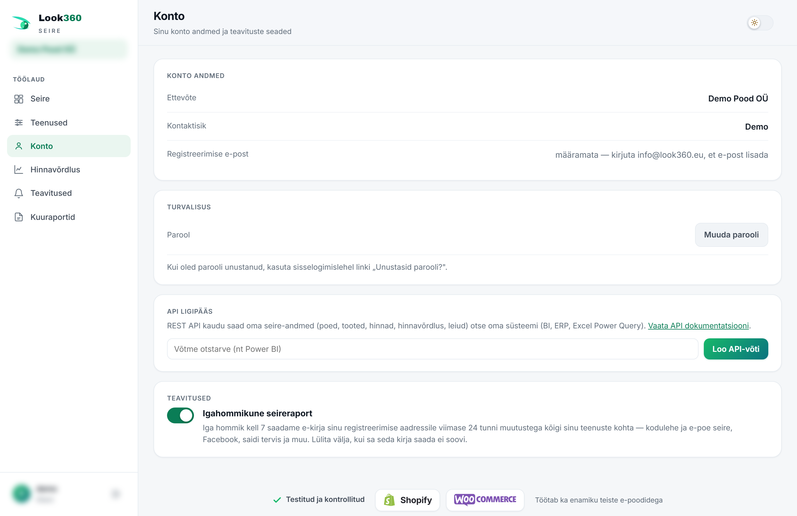
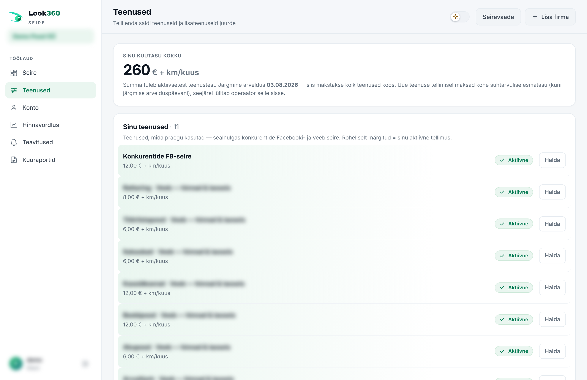

Look360 stebėsenos skydelis suveda į vieną vietą viską, ką stebime tavo vardu – konkurentų kainas ir atsargas, „Facebook“ įrašus ir reklamas, tavo paties el. parduotuvės būklę ir patikimumą. Nieko diegti nereikia: prisijungi, vienu žvilgsniu matai būklę ir svarbius pokyčius gauni kasrytiniu laišku. Ši instrukcija peržvelgia kiekvieną vaizdą ir mygtuką, o pabaigoje pateikiamos pavyzdinės situacijos, kurios susieja funkcijas į tikrą darbą.
1 Kas yra Look360
Look360 yra stebėsena, automatika ir reagavimas viename pakete. Stebėsenos skydelis yra tavo privatus darbalaukis adresu, į kurį prisijungi savo el. paštu ir slaptažodžiu. Ten matai visas stebimas įmones – tiek savo el. parduotuvę, tiek konkurentus – ir kiekvieną pokytį, kurį sistema užfiksavo: kainos kritimą, atsargų pabaigą, naują „Facebook“ įrašą, el. parduotuvės triktį.
Viskas veikia pagal spalvų logiką. Tos pačios trys spalvos kartojasi visur – darbalaukyje, įmonės kortelėje, lentelėje, grafikuose:
Svarbiausius pokyčius siunčiame ir kasrytiniu suvestiniu laišku, o patį kritiškiausią – iškart. Skydelį atveri tada, kai nori pamatyti daugiau arba ką nors pakeisti.
2 Prisijungimas
- Atverk Prisijungti – arba iš pradžios puslapio viršutinio kampo, arba iš šios instrukcijos viršaus, arba iš tiesioginės nuorodos, kurią tau atsiuntėme.
- Įvesk naudotojo vardą – tai tavo el. pašto adresas (pvz., tu@imone.lt).
- Įvesk slaptažodį ir spausk Įeiti
- Pamiršai slaptažodį? – iš apačioje esančios nuorodos el. paštu atsiųsime naujo slaptažodžio nustatymo nuorodą.
- Dar neturi paskyros? – mygtukas Registruotis nuveda prie pradžios puslapio kainoraščio, kur gali susidėti paketą ir prisijungti.
- Išbandyk be paskyros – prisijungimo puslapyje yra viešas demonstracinė paskyra, su kuria gali peržiūrėti visus vaizdus su tikrais pavyzdiniais duomenimis.
Paskyra susieta su tavo įmone. Prisijungęs viršuje kairėje žalioje juostoje matai savo įmonės pavadinimą – taip žinai, kad esi tinkamoje paskyroje.
4 Stebėsenos darbalaukis
Tai pradinis vaizdas. Viršuje rasi pagrindinius mygtukus, apačioje – tendenciją, suvestinę ir įmonių sąrašą.

Viršutinės juostos mygtukai
- Pridėti įmonę – pridėk naują stebimą įmonę (žr. 5 skyrių).
- Paslaugos – atverk paslaugų ir mėnesio mokesčio vaizdą.
- Atnaujinti vaizdą – iš naujo nuskaito naujausius duomenis ir atnaujina ekraną. Nekrausto svetainių, tik atnaujina vaizdą.
- Leisti pranešimus – įjungia push pranešimus į telefoną (žr. 9 skyrių).
- Skenuoti viską iš naujo – paleidžia tikruosius skenavimus (krausto svetaines), užtrunka kelias minutes. Tai galima daryti 1 kartą per parą.
Kaip veikia stebėsena? – pagalbos juosta
Darbalaukio viršuje yra išskleidžiama juosta Kaip veikia stebėsena? Spustelėk, kad perskaitytum trumpą paaiškinimą. Pirmą kartą, kai dar nėra nė vienos įmonės, ji būna atverta.
Radinių tendencija
Grafikas rodo, kaip radinių skaičius keitėsi per paskutines stebėsenas – ar viskas rimsta, ar reikia daugiau dėmesio. Visuose grafikuose yra ašies skalė ir vienetas; užvesk žymeklį ant linijos, kad pamatytum tikslų skaičių.
Suvestinė
Dešinėje yra keturi skaičiai ir būklės eilutė:
Kortelės, vaizdai ir eksportas
- Kortelės Visi Mano įmonė Konkurentai – filtruoja sąrašą.
- Lentelė / Kortelės – perjunk sąrašo pavidalą. Lentelė kompaktiška; kortelių vaizdas iškart parodo kiekvienos įmonės kanalus ir radinius.
- Rūšiuoti – rikiuok pagal numatytąjį, radinius arba pavadinimą.
- Eksportuoti CSV – atsisiunčia matomą lentelę kaip „Excel“ atveriamą failą.

Įmonių lentelė
Kiekviena eilutė yra viena stebima įmonė. Spustelėk eilutę, kad atvertum tos įmonės pilną vaizdą. Stulpeliai:
Tavo pridėti stebimieji
Jei pats pridėjai įmonę, matai jos būklę. Galimos būsenos:
- Laukia – laukia operatoriaus patvirtinimo.
- Kuriama… / DI aptinka… – el. parduotuvės skaitytuvas nustatomas automatiškai.
- Laukia apmokėjimo – duomenys paruošti, reikia patvirtinti mėnesio mokestį (žr. 6 skyrių).
- Atmesta – prašymas atmestas (priežastis nurodyta).
- Aktyvi – įmonė yra stebima.
„Facebook“ stebėsena, visi radiniai ir istorija
- „Facebook“ stebėsena – atskiroje kortelėje stebimų konkurentų naujausi įrašai; spustelėjus atveriamas originalas.
- Visi radiniai – visi paskutinės stebėsenos pokyčiai vienu sąrašu. Žymė Tik įspėjimai paslepia ramią dalį.
- Ataskaitų istorija – ankstesnės suvestinės ataskaitos; spustelėjus atveriama archyvuota ataskaita.
5 Įmonės pridėjimas
Darbalaukyje spausk Pridėti įmonę. Atsivers paprasta forma.
- Įmonės pavadinimas – pradėk rašyti ir iš sąrašo pasirink įmonių registro įmonę (arba įrašyk pavadinimą ranka).
- Žiniatinklio svetainė – pakanka pavadinimo be https:// pradžios, pvz., weekend.ee.
- Jei nori, įjunk stebėti el. parduotuvės kainas ir atsargas ir (arba) stebėti ir „Facebook“.
- Spausk Pridėti stebimą įmonę
Jei to paties pavadinimo ar žiniatinklio adreso įmonė jau yra tavo sąraše, sistema apie tai praneša – taip neatsiranda dvigubo įrašo nei dvigubo mėnesio mokesčio.
El. parduotuvės stebėsena
Jei pasirenki el. parduotuvės stebėseną, sistema bando parduotuvės prekes nuskaityti pati. Pavykus stebėsena pasileidžia automatiškai; kitu atveju peržiūri operatorius. Gali pridėti raktažodžio filtrą: įrašyk raktažodį ir spausk „Enter“ arba +, kad pridėtum žymą (pvz., vejapjovė). Palikus tuščią, stebime visas prekes.
El. parduotuvės stebėsena kainuoja 8 € per mėnesį už kiekvienas iki 2000 stebimų prekių. Visos kainos be PVM. Kai sistema parduotuvės prekes nuskaito, pats pasirenki kategorijas, kurias stebėti – tai lemia prekių skaičių ir mėnesio mokestį. Prieš atverdami duomenis parodome tikslią sumą ir paprašome patvirtinimo.
„Facebook“ stebėsena
Įvesk „Facebook“ puslapio adresą – pakanka puslapio pavadinimo arba adreso (pvz., facebook.com/konkurentas arba tiesiog konkurentas). Jei puslapio dar nėra stebėsenos sąraše, jis keliauja operatoriui patvirtinti. „Facebook“ stebėsena kainuoja 3 € per mėnesį už konkurentą.
6 Įmonės vaizdas ir prekių katalogas
Spustelėjus darbalaukyje įmonės pavadinimą atsiveria jos pilnas vaizdas: visi kanalai, radiniai, el. parduotuvės būklė, grafikai ir – el. parduotuvės atveju – visas prekių katalogas.

El. parduotuvės būklė
Iš kortelės matai iškart: prekių iš viso, sandėlyje, išparduota, nėra kainos, su nuolaida ir atsargos nežinomos. Skaičiai apskaičiuoti iš tos parduotuvės katalogo ir yra spustelimi.
Prekių skaičius laike
Grafikas rodo, kiek prekių parduotuvės kataloge buvo kiekvieną stebėsenos dieną – ar asortimentas auga, mažėja, ar išlieka pastovus. Šalia yra dabar, vidutiniškai, intervalas ir kryptis.
VIP prekės
Kataloge pažymėk prekei žvaigždutę, kad įtrauktum ją tarp VIP prekių. Kiekvienai VIP prekei nubraižomas atskiras grafikas: įprasta kaina, nuolaidos kaina ir atsargos laike. Vienu metu iki 10 prekių – stebėk tas, kurios tau svarbiausios.
Antraštės mygtukai
- Pasirinkti kategorijas – pasirink, kurias parduotuvės kategorijas stebėti (žr. 7 skyrių).
- Atverti svetainę – atveria konkurento el. parduotuvę naujame lange.
Mėnesio mokesčio patvirtinimas
Kai parduotuvės prekės nuskaitytos, matai skaičiuoklę: prekių skaičius, pakopos (× iki 2000 prekių), bazinė kaina 8 € ir mėnesio mokestis iš viso. Iki patvirtinimo katalogas rodomas kaip pavyzdys išsklaidytas (blur). Parinktys:
- Sumokėti ir atverti duomenis – nukreipiame į saugų mokėjimo tinklų sietuvą (banko nuoroda arba kortelė); duomenys atsiveria iškart.
- Mokėti pavedimo sąskaita – sąskaitą siunčiame el. paštu; turinys atsiveria gavus apmokėjimą.
- Pasirinkti kategorijas – sumažink prekių skaičių, kad mėnesio mokestis kristų.

Prekių katalogas
- Paieška – įrašyk prekės pavadinimą, kad filtruotum sąrašą.
- Kategorijos – spustelėk kategoriją, kad atvertum pakategores ir prekes.
- Atsargos – prie kiekvienos prekės sandėlyje, išparduota arba nežinoma.
- Kaina – esant nuolaidai matai perbrauktą įprastą kainą ir nuolaidos kainą raudonai.
- Žvaigždutė įtraukia prekę į VIP sąrašą; varpelis iškart sukuria kainos pranešimą; rodyklė nuveda prie prekės parduotuvėje.
Kainos ir atsargų istorija
Spustelėjus prekės eilutę atsiveria grafiko langas: dabartinė kaina ir nuolaida, įprasta kaina ir nuolaidos kaina laike bei atsargos. Legenda apačioje paaiškina linijas.

7 Kategorijų pasirinkimas
Mygtukas Pasirinkti kategorijas atveria visų parduotuvės kategorijų sąrašą. Kuo mažiau prekių pasirenki, tuo mažesnis mėnesio mokestis.
- Žymėmis pažymėk kategorijas, kurias nori stebėti. Padeda Pažymėti viską, Atšaukti pasirinkimą ir paieška.
- Apačioje sek skaičiuoklę: pasirinktos prekės → pakopos (× iki 2000) → mėnesio mokestis atsinaujina iškart.
- Spausk Išsaugoti pasirinkimą
Pasirinkimą gali bet kada vėliau pakeisti – mėnesio mokestis prisiderina atitinkamai.
9 Pranešimai
Meniu punktas Pranešimai leidžia nustatyti taisykles, kurioms išsipildžius iškart siunčiame pranešimą – push pranešimu į telefoną ir (arba) el. laišku.

- Pasirink sąlygą – pvz., kainos kritimas bent X%, atsargos išparduotos, nauja prekė, konkurentas nukrito žemiau tavo kainos.
- Pasirink parduotuvę (visos stebimos arba viena konkreti) ir, jei nori, konkrečią prekę.
- Nustatyk ribą (%), jei sąlygai jos reikia.
- Pažymėk Push pranešimą ir (arba) El. laišką ir spausk Pridėti taisyklę
- Taisyklę bet kada gali laikinai išjungti arba ištrinti.
- Greičiausiai pranešimą sukuri tiesiai iš katalogo arba kainų palyginimo – varpelio piktograma prekės eilutėje užpildo formą iš anksto.
- Kad gautum push pranešimus, viršuje spausk Leisti push pranešimus (iPhone – po įdiegimo kaip programėlės, žr. 17 skyrių).
10 Mėnesio ataskaitos
Meniu punktas Mėnesio ataskaitos kiekvieno mėnesio 1 dieną už praėjusį mėnesį suveda PDF suvestinę vadovybei: kainų pokyčiai, asortimento judėjimas, tavo kainos padėtis rinkoje ir prekės ženklo apsaugos pažeidimai.

- Automatinė – ataskaita paruošiama ir siunčiama el. paštu kiekvieno mėnesio pradžioje; nieko daryti ranka nereikia.
- Archyvas – visos ankstesnės mėnesio ataskaitos yra čia atsisiuntimui.
- Skirtingai nuo kasrytinio laiško (žr. žemiau), mėnesio ataskaita yra suvestinė apžvalga sprendimų priėmėjui, o ne dienos pokyčių sąrašas.
Kasrytinis laiškas ir realaus laiko įspėjimai
- Kasrytinis laiškas – svarbiausi pokyčiai automatiškai pasiekia tavo (ir sutartų kontaktų) pašto dėžutę. Jį galima įjungti/išjungti Paskyros puslapyje.
- Realaus laiko įspėjimai – patys kritiškiausi (pvz., konkurento kainos kritimas, el. parduotuvės triktis, atsargų pabaiga) pasiekia iškart per pranešimų taisykles.
11 Paskyra ir API prieiga
Meniu punktas Paskyra suveda tavo paskyros duomenis ir nustatymus.

- Paskyros duomenys – įmonė, kontaktinis asmuo ir registracijos el. paštas.
- Slaptažodis – Keisti slaptažodį; pamirštą slaptažodį gali atkurti iš prisijungimo puslapio.
- Kasrytinė stebėsenos ataskaita – jungiklis, kuriuo el. laišką įjungi arba išjungi.
API prieiga (BI, ERP, Excel)
Per REST API gali gauti savo stebėsenos duomenis – parduotuves, prekes, kainas, kainų palyginimą, radinius – tiesiai į savo sistemą (Power BI, ERP, Excel Power Query).
- Įrašyk rakto paskirtį (pvz., „Power BI“) ir spausk Sukurti API raktą
- Iškart nukopijuok raktą – jis rodomas tik vieną kartą.
- Iš nuorodos peržiūrėk API dokumentaciją, kokie galiniai taškai yra prieinami.
12 Visos paslaugos ir mėnesio mokestis
Iš meniu Paslaugos matai viską, už ką moki, ir gali papildomai užsisakyti. Viršuje yra tavo mėnesio mokestis iš viso ir kito atsiskaitymo data.

Žemiau yra viskas, ką siūlome. Visos kainos be PVM, per mėnesį.
Skenuoja tavo el. parduotuvės prekes ir randa trūkumus: trūkstamus paveikslėlius ir alt tekstus, tuščius arba per trumpus aprašymus, sugedusias kainas, dubliuotas prekes. Pateikia būklės % ir taisytinų dalykų sąrašą.
Stebi tavo raktažodžių pozicijas „Google“ ir randa turinio spragas – temas, kuriomis dar neturi turinio. Kaina priklauso nuo stebimų raktažodžių skaičiaus.
Tikrina, ar tavo svetainė / el. parduotuvė veikia ir kaip greitai atsako. Praneša, jei svetainė nukrenta arba tampa lėta.
Sujungia tavo el. parduotuvę ir apskaitos programą (pvz., Directo) – užsakymai, atsargos ir kainos juda automatiškai, be perkėlimo ranka.
Konkurencija grįsti kainų pasiūlymai tavo paties parduotuvei, kuriuos vienu spustelėjimu galima įrašyti į WooCommerce (žr. 14 skyrių).
Stebi konkurentų „Facebook“ įrašus: naujos prekės, kampanijos, renginiai, kainų pranešimai. Viskas viename sraute, nauji išryškinti.
Stebi konkurentų aktyvias „Facebook“ reklamas – ką jie reklamuoja, kiek reklamų veikia ir kada jos prasidėjo ar buvo sustabdytos.
Stebi konkurento el. parduotuvės kainas, nuolaidų kainas, atsargas ir asortimentą. Pateikia istorijos grafikus ir maitina kainų palyginimą. Pakopinė: 8 € už kiekvienas iki 2000 prekių.
Nustatai savo prekių RRP (rekomenduojama mažmeninė kaina) ir MAP (mažiausia leidžiama reklaminė kaina); sistema stebi, kurie perpardavėjai jas pažeidžia (žr. 15 skyrių).
Apmokome tavo komandą sistemos ir el. parduotuvės temomis, kad visi mokėtų stebėseną ir duomenis panaudoti savo naudai.
Pagal specialų užsakymą automatizuojame tavo kartotinius darbus – ataskaitas, sinchronizacijas, pranešimus, duomenų srautus. Spausk Prašyti pasiūlymo.
Būklės patikra + SEO + patikimumas + kainų perkainojimas.
Konkurentų FB stebėsena + el. parduotuvės būklės patikra + patikimumas.
Būklės patikra + patikimumas + ERP integracija.
Kaip užsisakyti
- Prie kiekvienos paslaugos yra kaina €/mėn. Spausk Užsisakyti, patvirtink lange ir sumokėk pradinį mokestį; paketai užsako kelias paslaugas iškart.
- Aktyvios paslaugos yra žalios. Atšaukti nutraukia paslaugą; konkurentų stebėsena valdoma per Pridėti įmonę ir mygtuką Tvarkyti.
- Apmokėta – laukia aktyvavimo: pradinis mokestis sumokėtas ir operatorius paslaugą netrukus įjungs.
Užsisakant naują paslaugą iškart sumoki proporcingą pradinį mokestį – tik iki kitos atsiskaitymo dienos. Vėliau visos paslaugos atsiskaitomos kartu, pagal tavo prisijungimo dienos metines.
13 Kaip vyksta mokėjimas
Kiekvienas mokėjimas prasideda patvirtinimo langu, kuriame nurodyta suma ir už ką moki. Visada gali Atšaukti.
- Mokant iškart nukreipiame į saugų mokėjimo tinklų sietuvą – moki banko nuoroda arba kortele, ir duomenys / paslauga atsiveria iškart po mokėjimo.
- Pavedimo sąskaita – sąskaitą siunčiame el. paštu. Turinys atsiveria visa apimtimi tada, kai gaunamas apmokėjimas.
- Pradinis mokestis visada proporcingas iki kitos atsiskaitymo dienos; toliau taikomas pilnas mėnesio mokestis.
- Atsiskaitymas vyksta už visas paslaugas kartu, pagal tavo prisijungimo dienos metines.
14 Kainodara
Meniu punktas Kainodara matomas tik tada, kai turi užsisakęs kainų perkainojimo paslaugą. Ten matai konkurencija grįstus kainų pasiūlymus tavo paties parduotuvei.
- Generuoti iš naujo apskaičiuoja pasiūlymus iš naujo; Taisyklės ir Istorija rodo nustatymus ir ankstesnius pakeitimus.
- Prie kiekvieno pasiūlymo: Įrašyti nuveda kainą į parduotuvę, Palikti kaip yra palieka kainą ir ignoruoja prekę pasirinktą dienų skaičių, Praleisti praleidžia pasiūlymą.
Pagal numatymą viskas veikia bandymo režimu: pasiūlymai apskaičiuojami, tačiau nė vienas „Įrašyti“ nekeičia tavo parduotuvės. Tiesioginį režimą (tikrą kainų įrašymą) įjungiame kartu su tavimi. Apatinės ribos (kainos grindys, MAP) apsaugo nuo per žemo pasiūlymo.
15 Prekės ženklo apsauga
Meniu punktas Prekės ženklo apsauga skirtas prekės ženklo savininkui ir importuotojui. Jei turi užsisakęs perpardavėjų kainų priežiūrą, čia apibrėži savo prekių kainų taisykles ir matai, kas jas pažeidžia.
- Pridėk savo prekes su RRP (rekomenduojama mažmeninė kaina) ir MAP (mažiausia leidžiama reklaminė kaina). Prekes galima pridėti po vieną arba importuoti.
- Sistema lygina stebimų perpardavėjų kainas su tavo RRP/MAP.
- Matai pažeidimų sąrašą – kas parduoda žemiau MAP arba nukrypsta nuo RRP – ir gali eksportuoti CSV.
Palaikai savo prekės ženklo kainų lygį – radus pažeidimą turi dokumentuotą pagrindą kalbėtis su perpardavėju.
16 Pavyzdinės situacijos
Štai kaip funkcijos susijungia į tikrą darbą.
1. Konkurentas numušė kainą
Rytinis laiškas atneša „Konkurentas X: 12 kainų kritimų“. Atveri Kainų palyginimą ir matai, kad trijose prekėse dabar esi rinkoje brangiausias. Kainodara pasiūlo naujas kainas – jas vienu spustelėjimu įrašai į parduotuvę.
2. Konkurentui baigėsi prekė
Esi nustatęs pranešimo taisyklę „atsargos išparduotos“ vienai raktinei prekei. Kai konkurentui ji baigiasi, gauni push į telefoną. Reaguoji: pakeli kainą arba reklamuoji, kad tu turi prekę sandėlyje.
3. Naujas konkurentas rinkoje
Išgirsti apie naują parduotuvę. Pridėti įmonę → el. parduotuvė + „Facebook“ → patvirtini mėnesio mokestį. Per kelias minutes matai jo asortimentą, kainas ir „Facebook“ veiklą.
4. Mano el. parduotuvės būklė šlubuoja
El. parduotuvės būklė rodo 109 kritines klaidas – trūkstamus paveikslėlius ir alt tekstus. Pereini taisytinų dalykų sąrašą; kitos stebėsenos metu būklės % pakyla.
5. Mėnesio apžvalga valdybai
Mėnesio 1 dieną PDF mėnesio ataskaita automatiškai pasiekia pašto dėžutę. Persiunti ją valdybai – kainų judėjimo, asortimento ir rinkos padėties suvestinė viename faile.
6. Perpardavėjas nukrito žemiau MAP
Esi prekės ženklo savininkas. Prekės ženklo apsauga rodo, kad vienas perpardavėjas parduoda prekę žemiau sutartos MAP. Eksportuoji pažeidimą ir susisieki su perpardavėju.
7. Duomenys į savo BI
Nori kainų ir atsargų savo Power BI ataskaitoje. Paskyra → Sukurti API raktą → sujungi REST API per Power Query. Duomenys atsinaujina automatiškai.
17 Programėlė ir tamsus režimas
- Įdiek kaip programėlę – telefone gali pridėti skydelį į pradžios ekraną kaip programą: atverk naršyklės meniu ir pasirink „Pridėti į pradžios ekraną“. Toliau Look360 atsivers tiesiai iš piktogramos ir per visą ekraną – nieko atsisiųsti nereikia.
- Pranešimai į telefoną – mygtukas Leisti push pranešimus siunčia svarbius pokyčius tiesiai į įrenginį. iPhone tai veikia po įdiegimo kaip programėlės.
- Tamsus / šviesus režimas – viršutinės juostos jungiklis (saulė/mėnulis) keičia temą. Pasirinkimas įsimenamas.
- Telefone – meniu paslėptas už ☰ mygtuko viršutiniame kampe; turinys prisiderina prie ekrano pločio.
- Atsijungimas – kairėje apačioje šalia naudotojo vardo esanti pro-duris-lauk piktograma.
18 Pagalba ir kontaktai
Iškilus klausimui ar rūpesčiui, atsakome anglų kalba – tikras žmogus, o ne automatinis atsakymas.
- El. paštas: info@look360.eu
- Telefonas: +372 5362 0246
- Dažnai užduodami klausimai: pradžios puslapio DUK
Prisijunk → darbalaukyje stebėk žalią / geltoną / raudoną → pridėk įmonių ir paslaugų → nustatyk pranešimų taisykles → svarbius pokyčius gausi ir laišku bei push pranešimu. Daugiau nieko daryti nereikia.